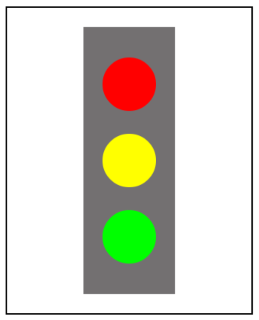

Write a program that draws a stoplight. You should have a gray rectangle, and then three circles in the rectangle.
The circles should be red, then yellow, then green. You should use the drawCircle function from the video.
The rectangle should be centered on the screen. The yellow light should be centered on the screen, and the red
and green light should be offset by BUFFER amount.
編寫一個程序，繪製一個紅綠燈。你應該有一個灰色的矩形，然後三個圓的矩形。圓圈應該是紅色，然後是黃色，然後綠色。
您應該使用畫圓的功能從視頻。矩形應集中在屏幕上。黃燈應居中顯示在屏幕上，而紅色和綠色的光應該被緩衝量來抵消。
var LIGHT_RADIUS = 35; var STOPLIGHT_WIDTH = 120; var STOPLIGHT_HEIGHT = 350; var BUFFER = 100; var GRAY_COLOR = "#737071"; 變量光_半徑 = 35; 變量紅綠燈_寬度 = 120; 變量紅綠燈_高度 = 350; 變量緩衝區 = 100; 變量灰_顏色 = "#737071";
